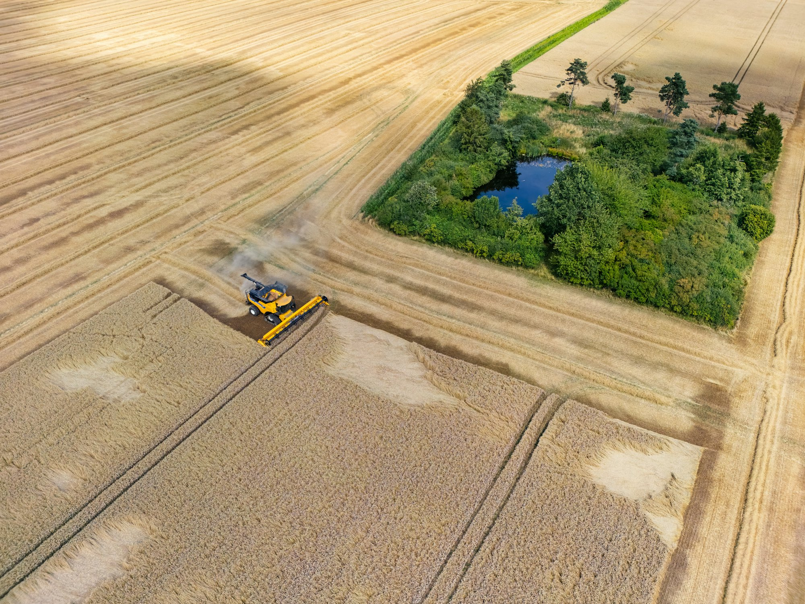

Built for teams handling
Senior, Microsoft-certified consultants who give agriculture operations ERP and IT capacity that scales with harvest — delivered in your time zone, in English and Spanish, at about 40% of a U.S. partner's rate.
Peak harvest doesn't wait for a hiring cycle · 20+ years delivering Microsoft solutions
When volume peaks, day-to-day operations take priority — and ERP and IT work gets pushed aside until things slow down, usually right when you need it least.
Some ERP setups hold up fine at normal volume but need manual workarounds once harvest hits full speed — yield entry lags, inventory drifts, invoicing backs up.
Three engagements for a Microsoft environment that's already live on the operation. Most teams start with the assessment — it's the fastest way to know whether the fix is configuration, not a new system.
A clear-eyed evaluation of where yield tracking, equipment inventory, and harvest-season workflows stand today — and a practical roadmap for what's next.
Full-cycle delivery of Dynamics 365, Power Platform, and Azure work — from planning to go-live — scoped to close the harvest-season gap, not rebuild the system.
Ongoing, expert-level support that scales with your harvest — no need to staff for peak volume year-round.
Usually there are three candidates: the partner who built it, an offshore vendor, or your own ops and IT team on top of their day job. Here's the honest trade-off.
| The partner who implemented it | Offshore outsourcer | Satustec Nearshore | |
|---|---|---|---|
| Cost of post-go-live work | Premium change-order rates | Lowest rate, highest rework | ≈60% below U.S. partner rates |
| Staffing for harvest season | Not their problem to solve | Fixed capacity, hard to flex | Scales up for harvest, down in the off-season |
| Overlap with your shift | Full | 1–2 hrs, or someone works nights | Full — same time zone |
| Language on the field & warehouse floor | English only | English, with idiom friction | English or Spanish, by audience |
| Microsoft designations | Varies | Varies | Business Apps · Data & AI · Modern Work · Infrastructure |
Cost comparison is directional, based on blended senior-consultant rates in the TX and CA markets. We'll model your specific scope on the intro call.
Across agriculture operations in Texas and California, a large share of the field supervisors, equipment operators, and warehouse staff who have to use the system every day work in Spanish. When the original rollout trained them in English, the result looks like a yield-tracking failure but isn't one: field data gets entered late or in batches, and shadow spreadsheets quietly become the real system of record.
We interview, test, and retrain in whichever language the room speaks, and write documentation in both.
Diagnosis — you find out what people actually do instead of what the SOP says.
Retraining — adoption recovers in weeks, often without touching the code.
Season readiness — yield data stops lying to you once the field enters it the way the system expects.
Two decades of real Microsoft support cases, indexed. Common issues get matched and fixed, not investigated from zero on your dime.
Level 1 requests are triaged by an AI agent before a consultant picks them up — faster first response during peak harvest.
Written response and resolution targets by severity. Answered by a person who was on yesterday's call — critical when the harvest clock is running.
Full field-to-warehouse visibility inside the ERP, not a spreadsheet bolted on for harvest season.
Machinery, parts, seed, and input inventory tracked accurately from purchase through use.
Support capacity that flexes with your planting and harvest calendar, not a flat retainer.
Fast, bilingual onboarding for the seasonal staff who run harvest — without waiting on IT.
The first engagement is deliberately small and useful even if it's the only one you ever buy from us.
Understand where things stand today — yield tracking, equipment inventory, and where support is stretched thin during harvest.
Day 0Clear coverage and pricing — you know exactly what's included before anything starts.
Within a weekNo lengthy onboarding. We plug into your environment and your time zone from day one.
No long ramp-upUsually it's a configuration gap, not a software limitation — Dynamics 365 and Business Central both support field- and lot-level tracking natively. We evaluate what's actually turned on versus what's available before recommending any new build.
Satustec is a U.S. company headquartered in Houston, Texas. You contract with Satustec, you're invoiced by Satustec, and you escalate to Satustec. Our delivery center operates in Central Time from Mexico.
All work product and IP transfer to you on payment, written into the master agreement. Consultants sign NDAs and work inside your tenant under your access controls.
Yes, and it's common. We define the RACI in week one so nothing falls between the two teams — and we don't require you to end that relationship to work with us.
Thirty minutes, no deck. You'll leave with a point of view on your environment and a cost range you can take to your CFO — even if you don't move forward with us.
Dani Peña, Business Development Manager · dany@satustec.com
801 Travis Street, Houston, TX 77002
We'll reply within one business day. No sequence, no drip — one human, one reply.